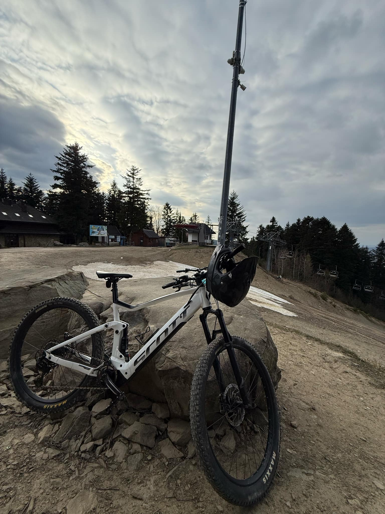
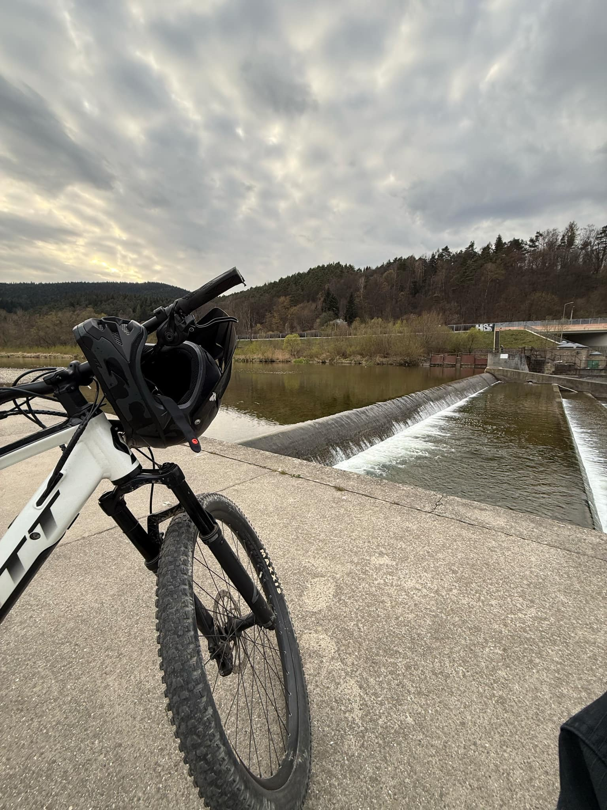
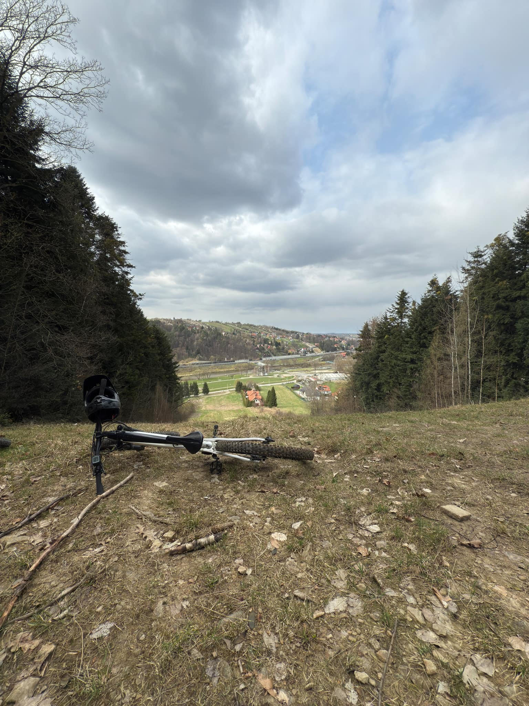

Rower MTB stał się moją pasją, kiedy kolega zaraził mnie tym sportem. Początkowo jeździliśmy razem, a z czasem odkryłem, jak wielką radość sprawia mi jazda.
Zaczynałem regularnie spędzać czas na rowerze, poznając nowe trasy i szukając wyzwań. Z biegiem lat, mimo że wciąż czerpię przyjemność z jazdy, jeżdżę mniej niż kiedyś.
Inne obowiązki i zainteresowania sprawiły, że rower nie jest już tak częstym wyborem, ale nadal uwielbiam poczuć ten wiatr na twarzy, gdy wsiadam na rower i wybieram się na przejażdżkę.


